Caretaker Prime
A cel-shaded creature garden: raise a few memorable creatures on an overgrown island that keeps living while the game is closed. Think Chao Garden care, Stardew restoration and Animal Crossing coziness.
Built in Unreal Engine 5.8 on a Mac by a team of AI agents directed by one person, with every art and sound asset generated on fal. This page documents how, including what didn't work.

Days eight and nine: gathering, an outpost, a home base
2026-10-04 to 10-05 · waves 12 and 13, one playtest fixTwo waves, both straight from Kenneth's playtests. Wave 12 made gathering feel good: two kinds of wood, stones you can pick up, a scythe, a Stardew-style hotbar and bag, work animations, and run-down outpost buildings you can repair. Wave 13 gave the caretaker a home base on the starting island: a workshop with a locker, craftable chests, a crate that ships surplus to the company for Supply Vouchers, a trash can, and a polish pass on the ground and the big tree. Then one more playtest fix: you could get stuck holding an egg.
Honest status: Kenneth picked the building concepts, the icon style and the new story, but the animations, the home base, the voucher sign and the ground pass are agent work waiting for his next play.
Wave 12: gathering feels good
Kenneth's six playtest asks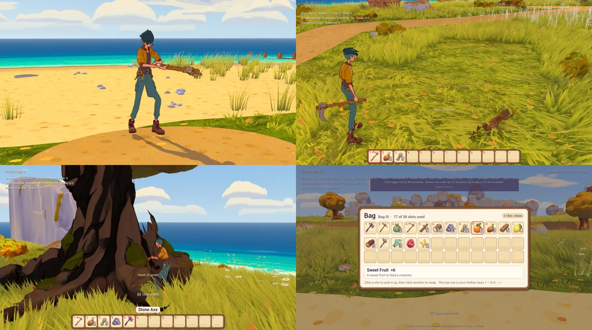
Wood, hardwood, stones, fiber
pending reviewLogs come from any tree; hardwood comes from big trees and old stumps and needs a Stone Axe. Small rocks are loose stones you pick up by hand. The scythe mows a whole swath of meadow for fiber, and the grass grows back over five days. The hotbar works like Stardew Valley's: the selected tool decides what E does, and the bag grows from 12 to 24 to 36 slots.
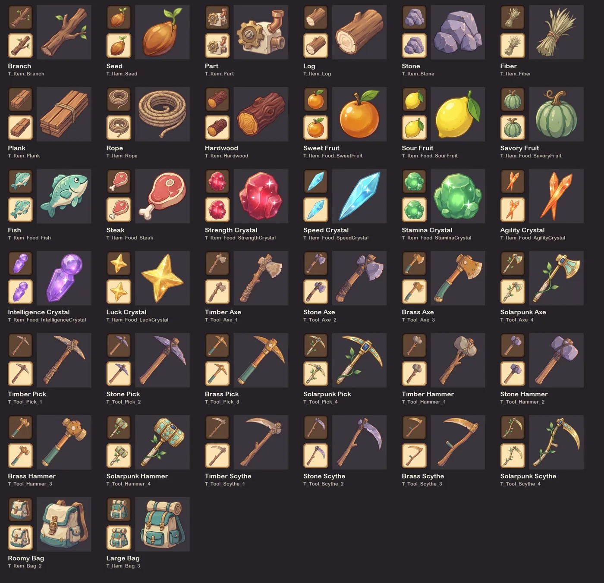
38 hotbar icons
Kenneth picked the styleEvery item and tool tier, drawn with nano-banana-pro in the style Kenneth chose from three tests, shown on dark and light slots.
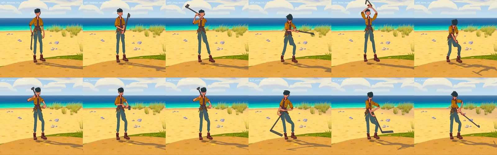
Work animations
pending reviewKeyed in Blender: drawing a tool, chopping, mining, hammering and scything for the caretaker, plus chop, hammer, sweep and carry for the creatures.
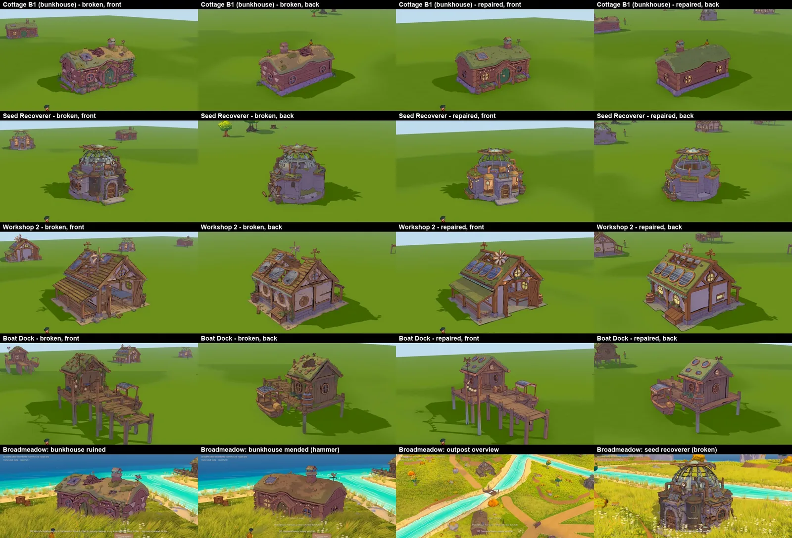
The outpost buildings
Kenneth pickedKenneth: “we want a solar punk vibe on this”, with a cottage, a seed recoverer as a late-game goal, a boat dock for getting between islands, and a workshop for tool upgrades. He picked a concept for each, and Tripo H3.1 multiview built all four in a broken and a repaired version with the same footprint. The bottom rows show them on Broadmeadow. The bunkhouse can already be mended with a hammer, with room for four creatures.
The story changed with them: nobody knows what happened to the last Prime. The outpost went dark six weeks ago, and everyone hoped it was just a bad relay.
Wave 13: the workshop is home base
from Kenneth's in-play notes · pending review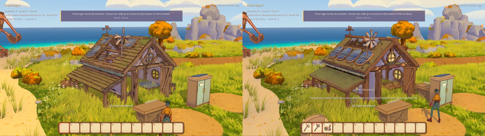
A workshop on the starting island
The workshop moved to Kettle Island, with the workbench and the Outpost Locker usable from day one. Mending it with a hammer opens the Brass and Solarpunk tool tiers and doubles the locker to 24 slots.
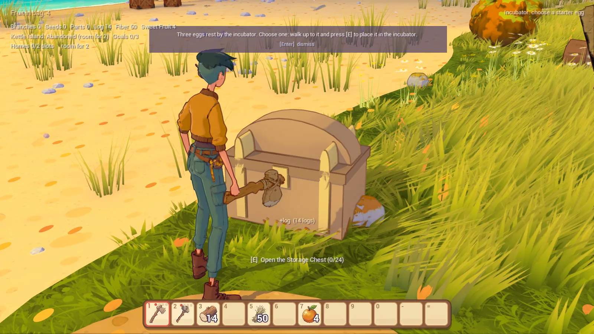
Storage Chests
Craft one at the workbench from 10 logs and 4 fiber and place it anywhere: 24 slots, with a quick-stack button. Tools can be stored too, and if your axe is in the locker, the prompt says so.
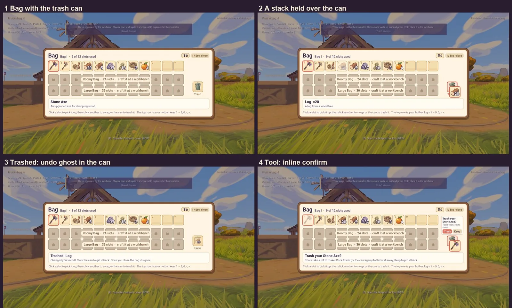
A trash can, with undo
Drop anything you don't want in the can, and take it back until you close the bag. Tools ask first, and story Parts can't be thrown away.
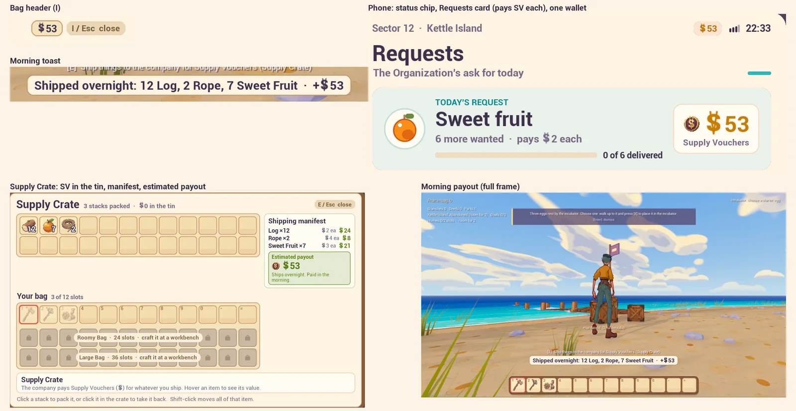
Ship surplus for Supply Vouchers
glyph awaiting KennethPut what you don't need in the Supply Crate at the landing beach. It ships overnight to the company that sent you, and the next morning you're paid in Supply Vouchers, the same wallet the daily requests pay into. Kenneth didn't want “tickets”, so the currency got its own sign: a V over an S that reads like a dollar. Six versions are below; he hasn't picked one yet.
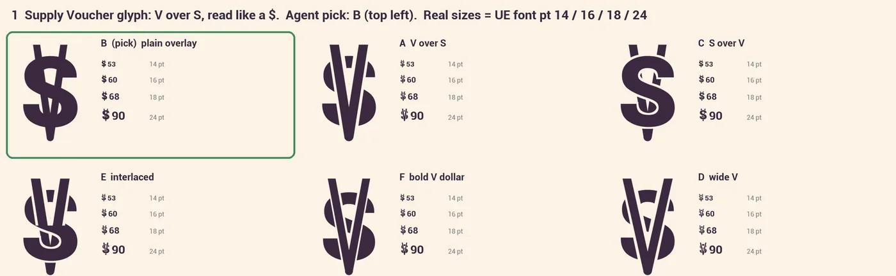
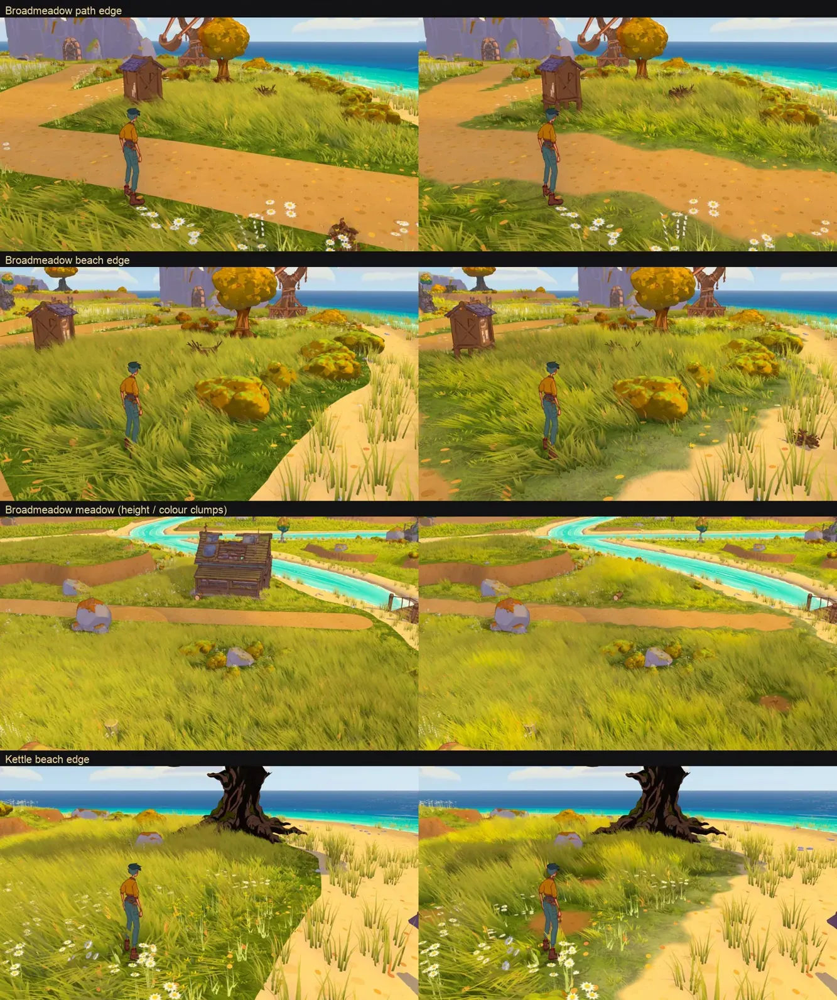
Ground polish
Before on the left, after on the right. Kenneth found the paths too sharp and the beach edge too clean. Now edges wander and blend, the grass varies in height and colour with drier blades by the sand, it stays out of buildings, and it thins softly under trees instead of in hard circles. (The shed in the third pair is the old workshop ruin, which moved to Kettle.)
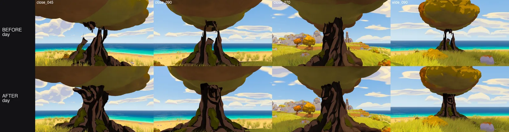
The big tree, without holes
The starting island's big oak had see-through gaps in its trunk. The mesh is now watertight from every side.
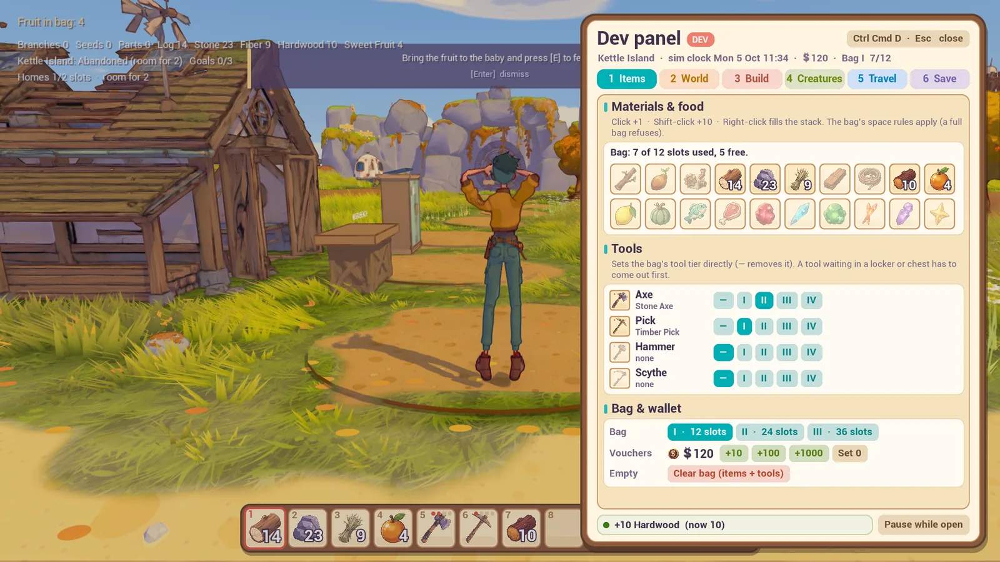
A dev panel for playtesting
Ctrl+Cmd+D opens six tabs: give items and tools, set the sky and season, skip time, repair or break buildings, hatch and age creatures, teleport, and save or reload.
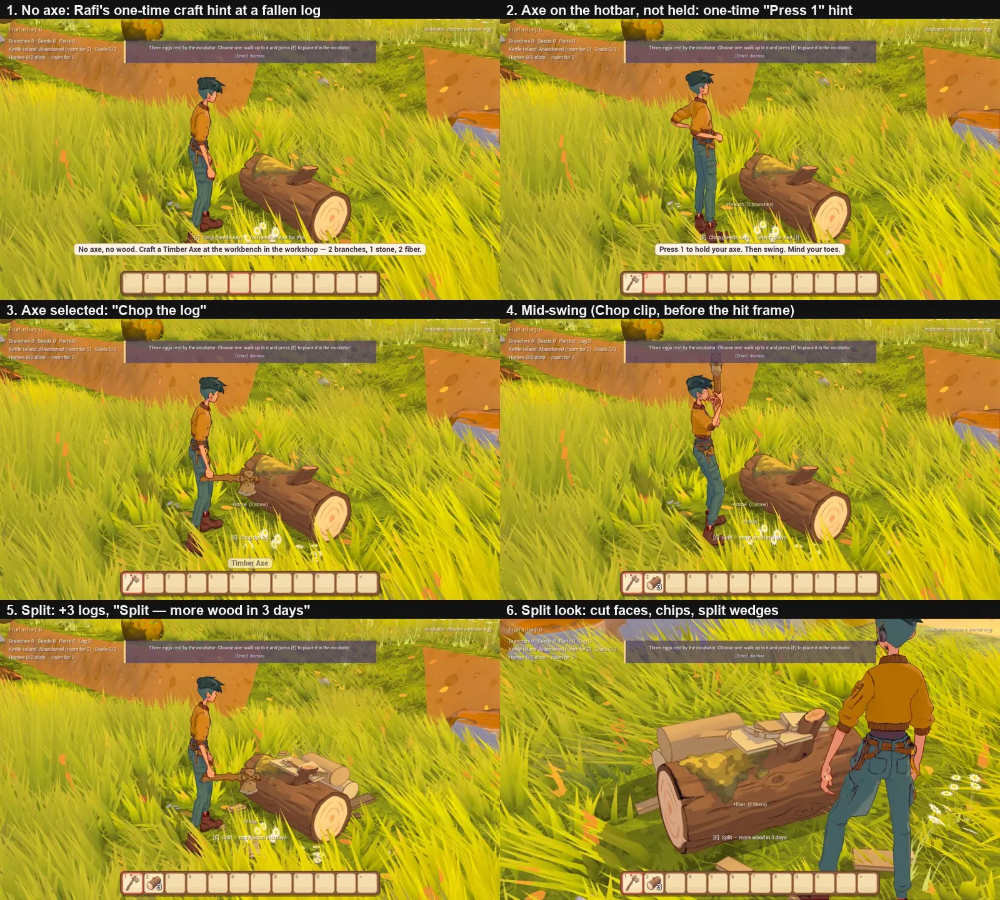
Fallen logs and one-time hints
Fallen logs split for a few logs with any axe and come back after three days. The first time you need a tool, the Prime tells you how to make it, and you get one reminder to press 1 to hold it.
Playtest fix: stuck holding an egg
2026-10-05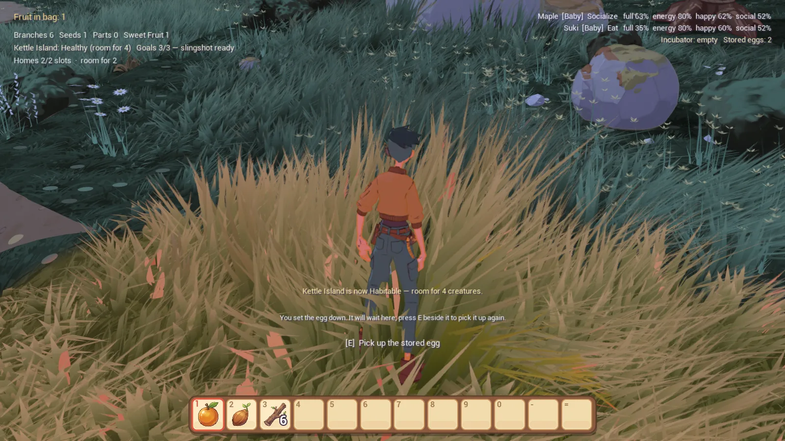
Set an egg down anywhere
one thing still openWith Kettle Island full, the incubator refused Kenneth's egg, there was no way to put it down, and carrying it to Broadmeadow stranded him there. Now G sets an egg down anywhere and it waits through saves and trips; eggs never block travel, since an egg isn't a resident until it hatches; and every refusal says how to get unstuck. Still open, and visible here: a set-down egg can disappear in tall grass.
Days five to seven: a real caretaker, creatures that grow up, crafting
2026-10-01 to 10-03 · waves 9, 10 and 11A, two playtest rounds, a trailer startedThree waves in three days. Wave 9 replaced the grey mannequin with a real caretaker: designed with Kenneth, built in 3D, skinned and animated, plus a title screen, baby coat variants and a grass fix. Wave 10 gave the creatures real grown-up bodies and some adult behaviour. Wave 11 is the big one: crafting, then decorating, then creatures that build the world themselves. Its first phase (tools, chopping, mining, a workbench) is merged. Two rounds of Kenneth's playtest notes were fixed in between.
Honest status: Kenneth chose the caretaker design and approved the creature bodies, but most of what's below is agent work still waiting for his review: the caretaker's model and animations, the title screen, the coats, the crafting concepts and the playtest fixes. The crafting meshes are placeholders.
Wave 9: the caretaker
from 80 drawings to a playable character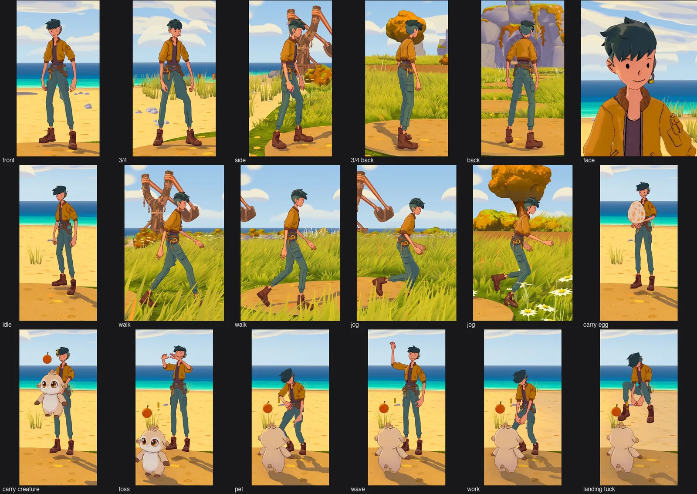
The Tech, in game
pending reviewTripo H3.1 multiview won a five-way bake-off. The model is skinned to Unreal's mannequin skeleton so the template's walking and running work, with 17 extra clips keyed in Blender.
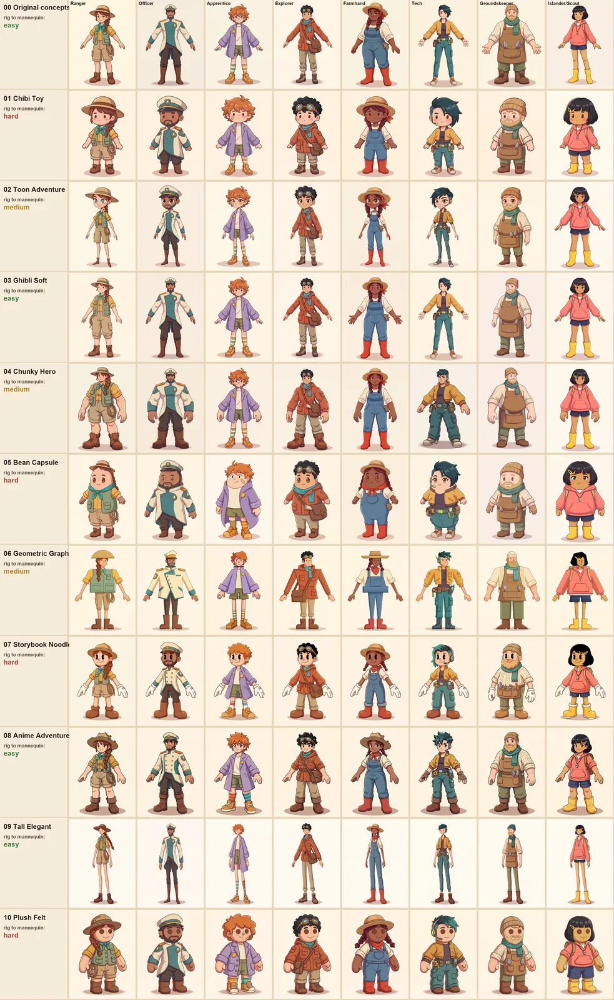
Ten styles × eight characters
Kenneth pickedEight caretaker concepts, each redrawn in ten shape styles with a note on how hard it would be to rig. Kenneth chose the Tall Elegant style and the Gadget Tech character.
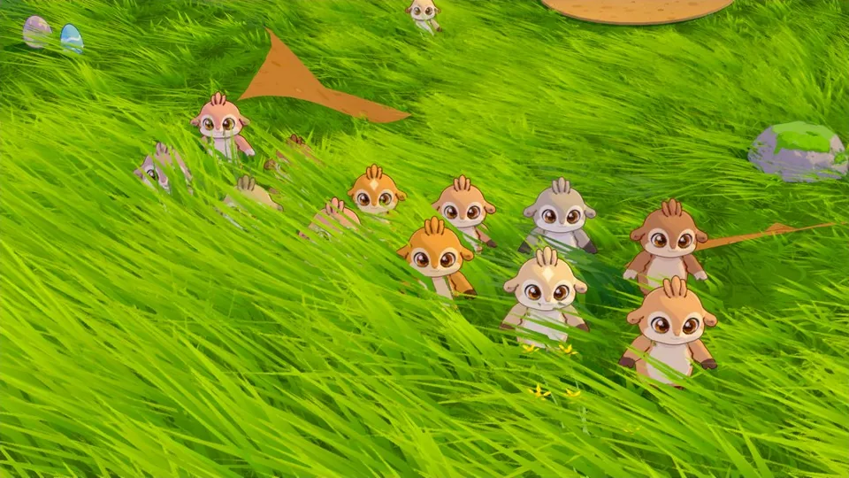
Baby coats
pending review8 coats and 8 markings, read from each creature's genes and passed to its children. Peach, cream, honey, rose, sage, lilac, cocoa and ash, with stars, saddles, freckles, stripes and socks.
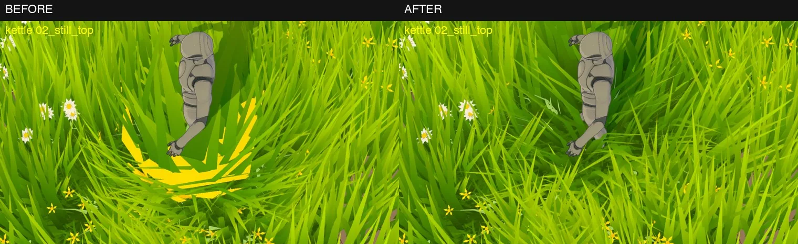
Grass that bends, not flattens
Before, blades pushed by the player squashed into a flat bright ring. Now each blade bends at its root and keeps its length.
Wave 10: creatures grow up
adolescent and adult bodies for four lines · approved by Kenneth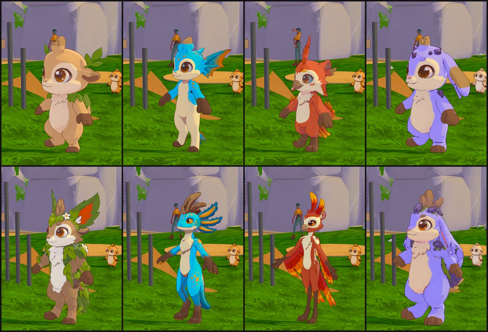
Leaf, Fin, Wing, Stone
approvedTop row: adolescents at 85 cm. Bottom row: adults at 120 cm. A baby stands behind each one for scale. Concepts were drawn with nano-banana-pro, built with Tripo H3.1 multiview (8 of 8 on the first try) and fitted to the baby's skeleton, so every existing animation plays on them. Adults can't be carried, but they can be shoved, and F asks a creature to follow you. Kenneth: “these look great”. He hasn't played with them yet.
Wave 11 Phase A: crafting
placeholder meshes in game · concepts waiting for Kenneth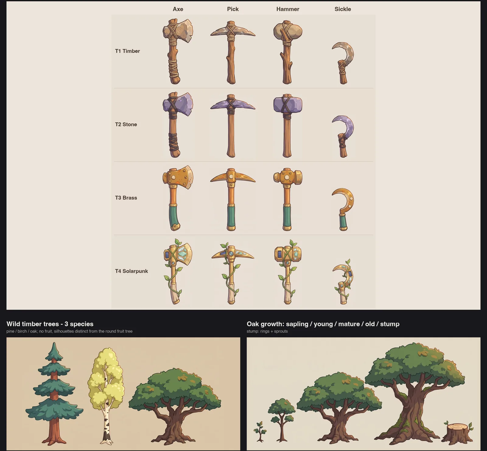
Tools and trees
pending reviewFour tool tiers, from lashed timber to a vine-wrapped Solarpunk set, plus pine, birch and oak and the stages an oak grows through. The game logic is in; the art isn't yet.
What Phase A adds
- An axe, pick, hammer and sickle in 4 tiers, with no durability to manage.
- Chop wild trees and fruit trees. The Prime calls to warn you about the fruit trees, up to three times.
- Mine rocks. Soft rocks give stone by hand, so you can build a first workbench before you own a pick.
- Grass gives fiber, and cleared grass and branch piles grow back each day, so materials don't run out.
- A workbench menu, the held tool in your hand and a materials list on the phone.
- Save schema v6, with a migration tested on a real older save.
Next come decorating, then creatures doing jobs when you ask, then creatures that pass ideas to each other and form crews.
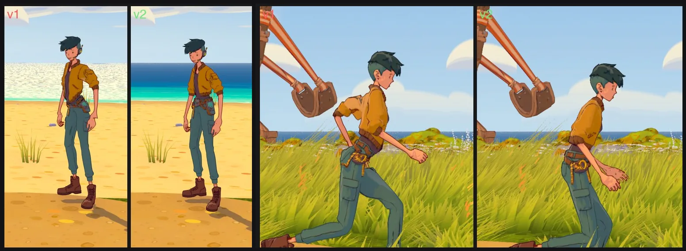
Skin weights v2
pending reviewKenneth circled where the caretaker bent badly. v1 is on the left of each pair, v2 on the right: a straight spine at idle and a clean shoulder and hip when jogging. Shoulders still stretch a little with the arms overhead.
Playtest fixes
Kenneth's notes from 2026-10-03 · he hasn't replayed yet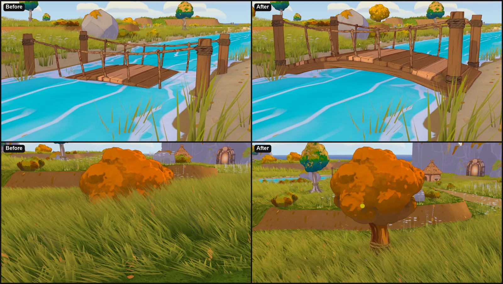
Sunk bridges and trees
Generated meshes have their pivot in the middle, and the game placed them by it: bridges sat in the water and planted trees sat 2 m underground. They now sit on their banks and on the ground.
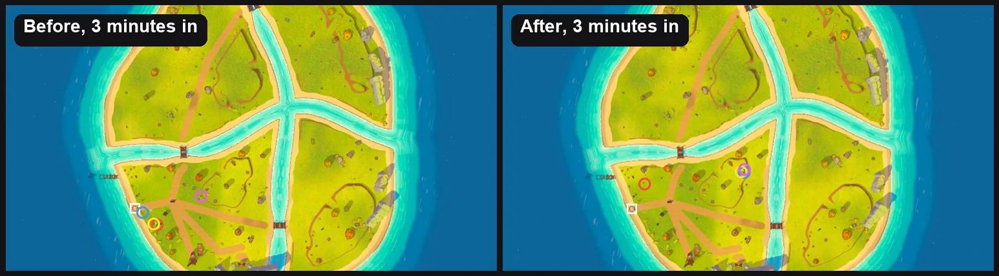
Creatures that roam
Kenneth: the creatures “just stay right where the player lands”. Now they scatter on arrival, wander toward points of interest and meet at social spots. Earlier the same day they stood frozen in a row; now they stroll.
A trailer, in progress
stills from a work-in-progress cut · not released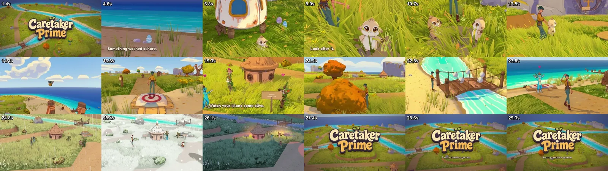
Cut in HyperFrames from in-game shots
in progressA console command flies the camera and records the shots offscreen, and the edit is built in HyperFrames, which makes video from HTML. The narration took three tries: the mentor's voice, then a movie-trailer announcer on two TTS engines, which Kenneth turned down. So an agent built a casting page with 25 voices across ElevenLabs v3, Gemini TTS and MiniMax. Kenneth wrote a first-person script for the player character, an apprentice caretaker who arrives to find the Prime gone, and picked one of 11 young voices reading it. The timing and the mix are still being reviewed.
Day four: the restyle
2026-09-30 · wave 7 overnight, wave 8 in the morningThe game played, but it looked like a greybox with a cel filter. Kenneth picked a set of AI concept paintings as the target look, and two art waves moved the real game toward them. Wave 7 (overnight, six lanes) added dense wind-swept grass, resculpted the islands into terraces with dirt lips, gave the look painterly shading, a painted sky and a warm night glow, and added footsteps that change with the surface. Wave 8 (five lanes, guided by Kenneth's research report on how Zelda-style games are rendered) added fog, cloud shadows, new trees and bushes, moving water, matte props and an overgrown nursery hub.
Honest status: Kenneth hasn't reviewed wave 8 yet, the caretaker is still the grey mannequin, and the concept frames below are AI paintings of where we're heading, not in-game shots.
Same camera, three days
the Kettle Island meadow, midday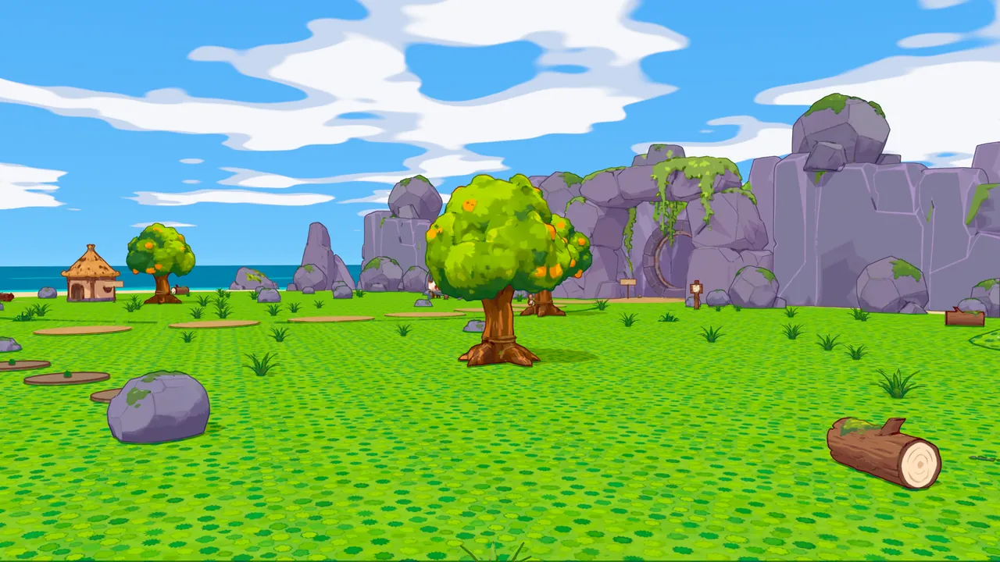
Before
day threeFlat ground with a patterned grass texture and scattered tufts.
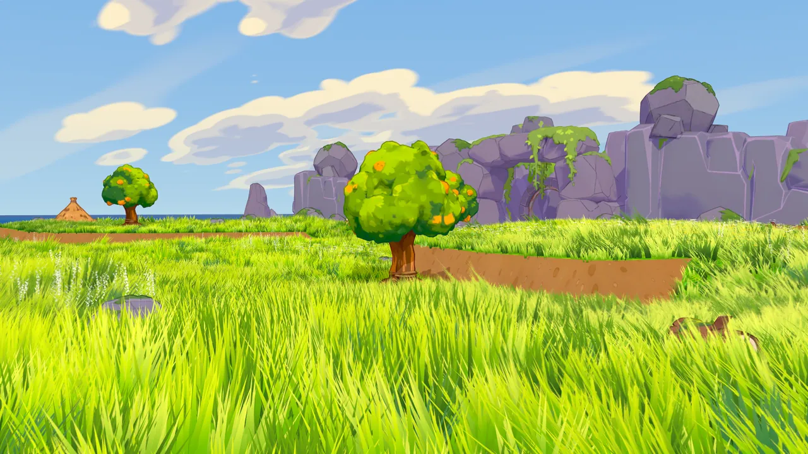
Wave 7
overnightDense instanced grass and a sculpted terrace with a dirt lip. The grass was bright and uniform.
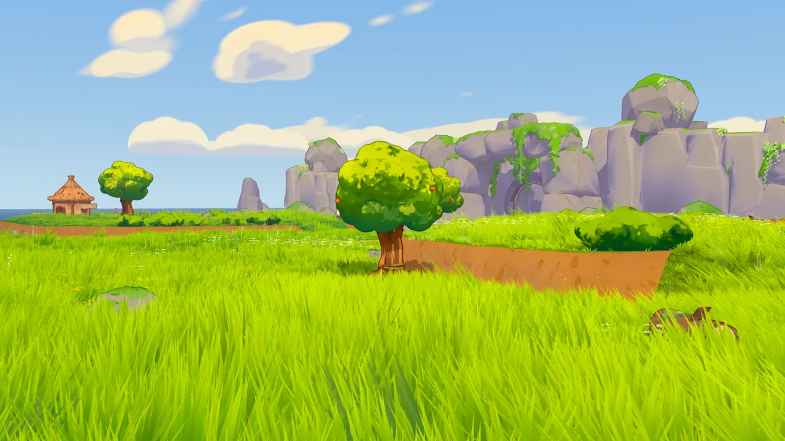
Wave 8
nowGrass roots share the ground's colour, a new canopy, bushes on the lip and height fog on the cliffs.
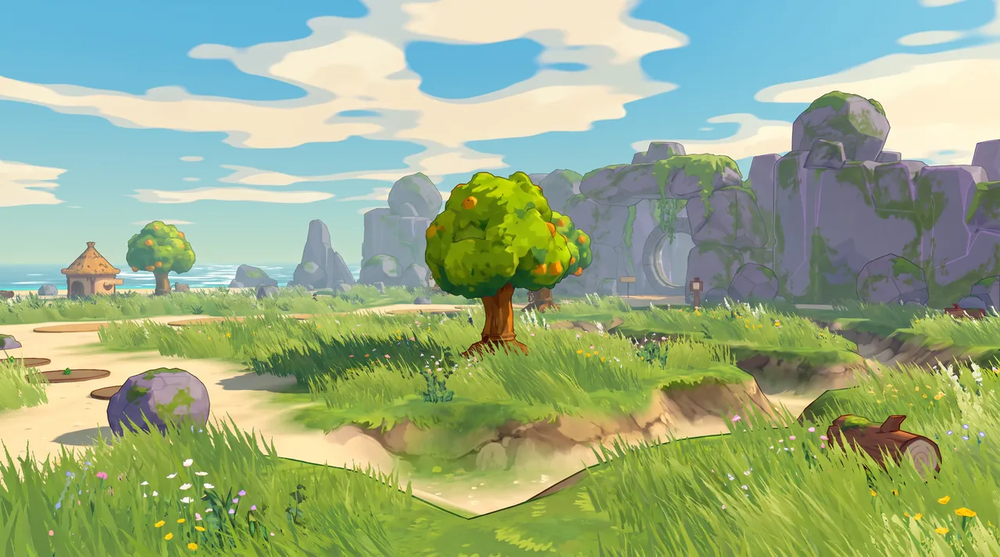
The target
AI concept artThe concept painting for this camera. Still ahead of us: the rolling paths, flowers and softer ledges.
Wave 8 in the engine
in-engine frames, no HUD · pending Kenneth's review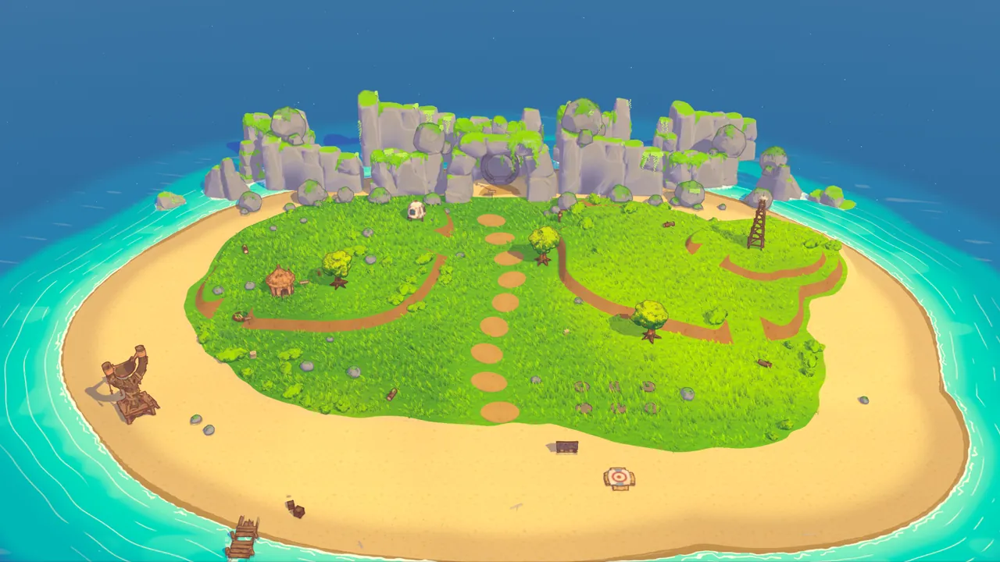
Kettle Island from above
The resculpted plateaus and the path in the valley. High views get a little lift so they don't go dull.
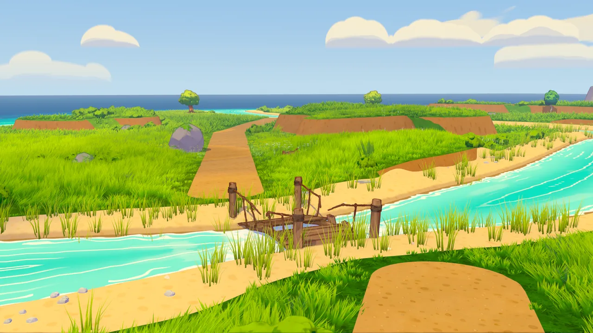
River and bridge
Flow lines on the river, foam around the posts and grass along the banked edges.
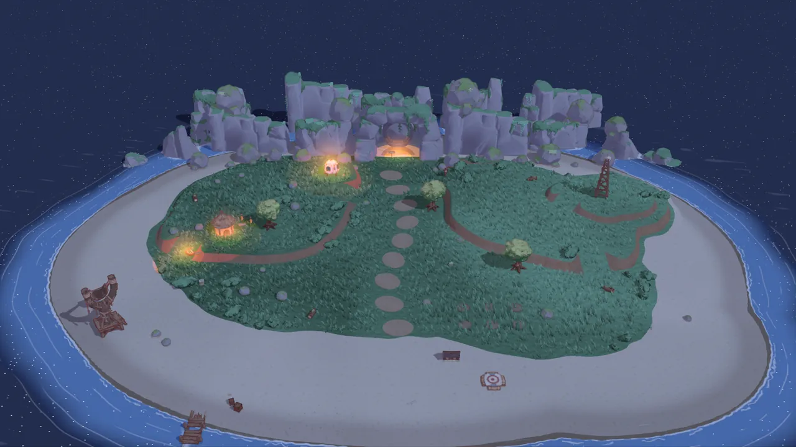
Night, toned down
After the playtest, the lamp glow is half as strong and fades up close. Night grass is now deep blue-green.
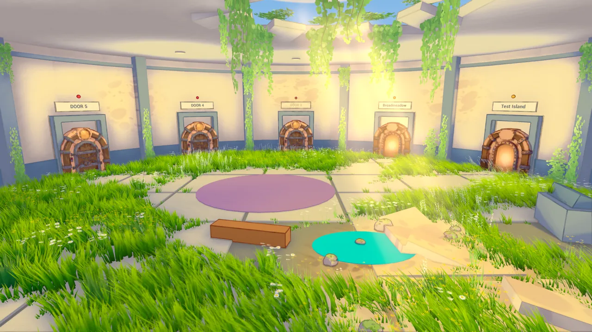
The overgrown hub
A grass carpet, ivy on the walls, golden sun shafts and leaf shadows on the floor.
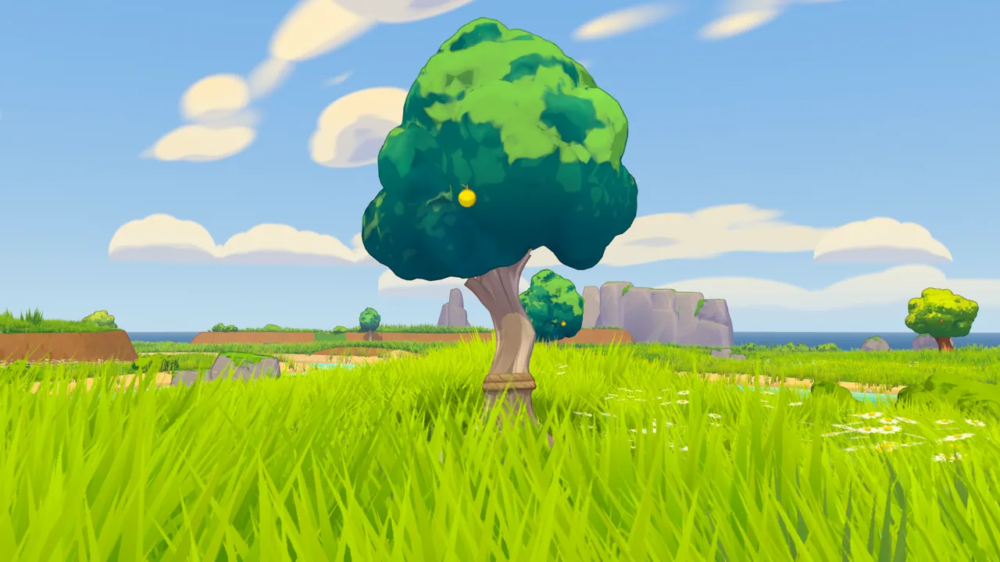
New trees
Canopies built from rounded leaf clusters that sway. Real fruit sits on the canopy instead of being painted on.
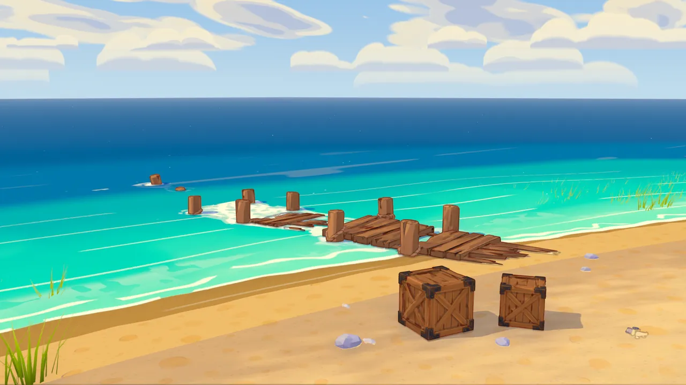
Beach and pier
Waves wash up and leave a wet band on the sand. Props are matte now and sit into the ground.
What didn't work, and what's left
- Unreal's newest foliage tools (Nanite foliage, GPU PCG) are experimental on the Mac, with crash and floating-grass reports, so the grass is plain instanced meshes placed by our own code.
- Wave 7 made the frame cost rise from about 6.5 to 9 ms. Wave 8 brought it back to about 8 ms at 1080p.
- Wave 8's first review found regressions (darker overviews, a bare patch by the landing path, grey night grass). A fix pass sorted them before these shots.
- A power cut hit mid-wave. Work lives in separate git worktrees, so only a few temporary scripts were lost.
- Still to do: the race track is a bit neon from above, the canopies are rounder than the concept, and the caretaker is still a mannequin.
Day three: one big run
2026-09-29 · about 20 agent lanes in parallel, 08:45 to 18:00One orchestrated run turned the starter island into a two-island game. The orchestrator wrote each wave's plan and a contract for the simulation, then dispatched lanes in parallel, each in its own git worktree: sim, narrative, maps, fal assets, UI, animation, gameplay, then race, homes, album, love & legacy, world & feel and audio. Every lane came back with tests and self-driving screenshot runs, and the orchestrator re-ran them before merging. The sim went from schema v2 to v5 over the day, each step with a migration so old saves still load.
Honest status: the caretaker is still the grey template mannequin. All the new art is waiting for Kenneth's review, and no human has listened to the new music yet. Kenneth is playing the build now.
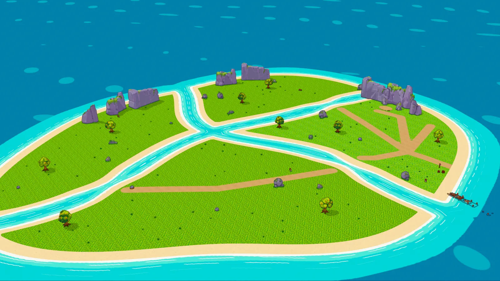
Broadmeadow, the main garden
playableThe second island. Two rivers split it into four areas, and each broken bridge takes 4 branches to repair. It has 9 fruit trees (sweet and sour), a request board that asks for fruit that grows on your island, a natural burrow for creatures to live in, and the race board.
The two-island MVP
restore, unlock, launch, travelThe path through it
- Restore Kettle Island: pull grass, gather branch piles, push rocks aside. Clears raise the island from Abandoned to Habitable, Healthy and Thriving, and make room for more creatures.
- The old caretaker's notes. Six notes around the island hide the four-digit nursery door code between them.
- The nursery hub. Behind the vault door, an underground room with a door for every island, locked until you reach that island. A biscuit tin on a shelf holds the part that repairs the broken incubator.
- Plant and set goals. Hand-fed fruit leaves a seed to plant. Any 3 of 8 goals loosen the giant slingshot on the beach.
- Launch. Carry one creature (G) into the pouch: pull back, a tumbling flight, and a squash-and-bounce landing on Broadmeadow.
- Fast travel. Once both doors are open, the phone's Travel app takes you through the hub.
A self-driving run () plays all of it in about 80 seconds: 87 of 87 checks.
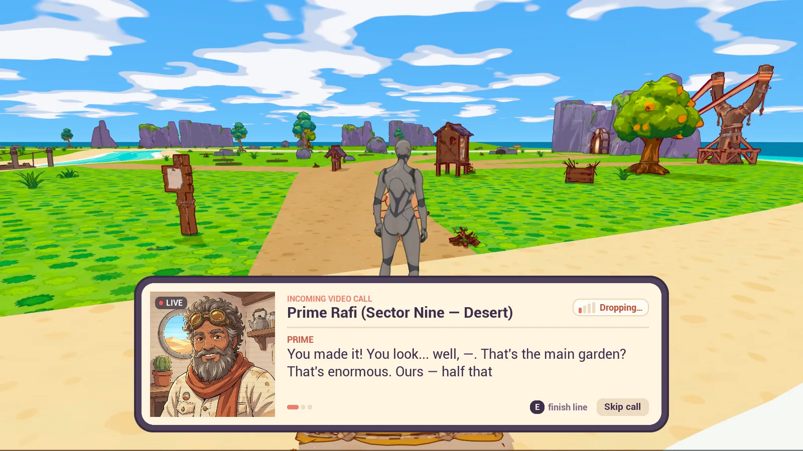
Mentor calls from Prime Rafi
The phone rings at story moments (15 triggers), only when things are quiet: never twice within a minute and never over another panel. If several are due, you get one call with a short catch-up line.
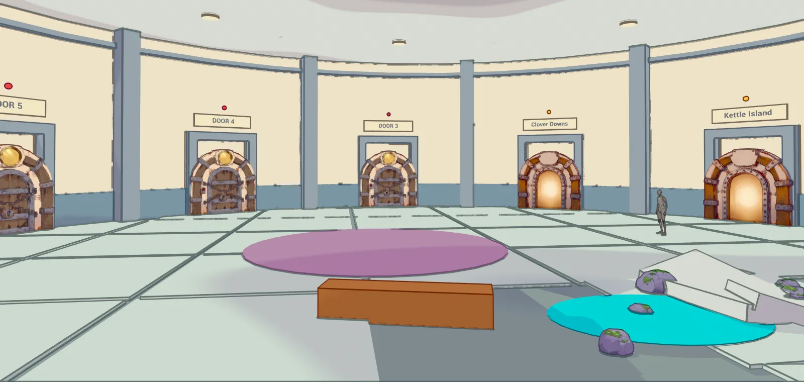
The nursery hub
Five doors: Kettle Island, the main garden (renamed by a test run here) and three locked ones for islands still to come.
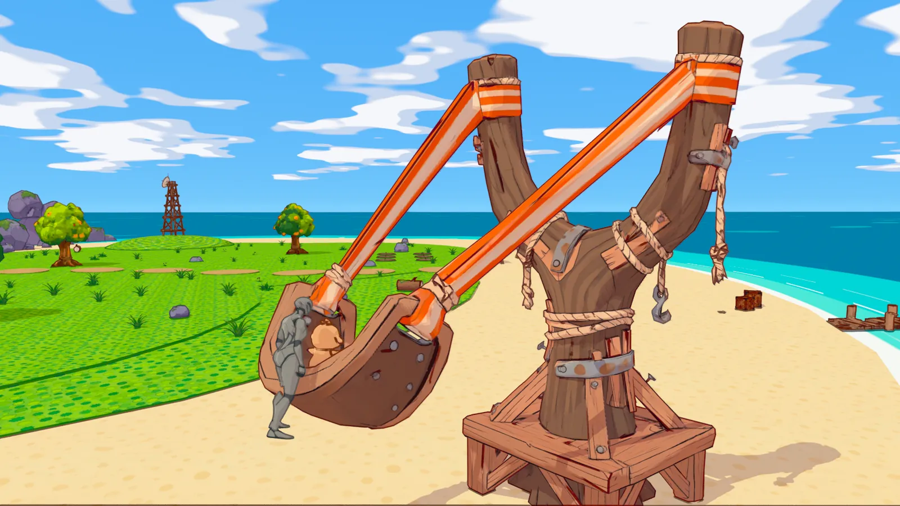
The giant slingshot
A 3-second launch you can skip. A creature you're carrying tumbles along.
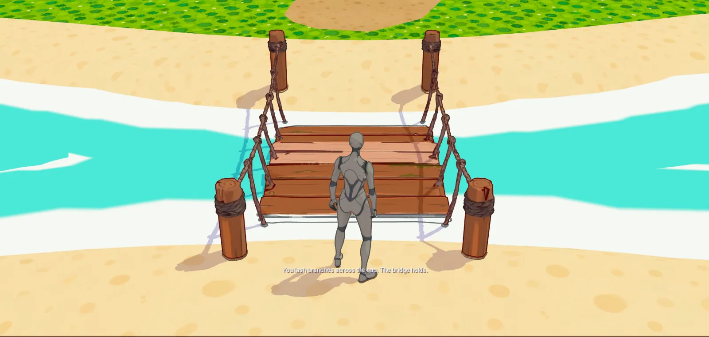
A repaired bridge
Repairing it removes the blocker and updates the navmesh, so creatures can cross too.
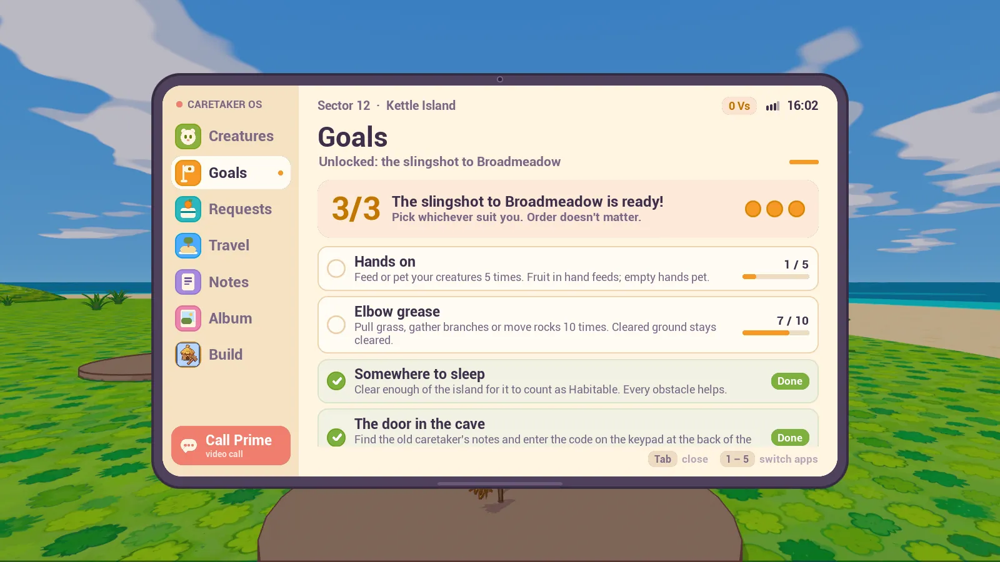
The phone
Creatures, Goals, Requests, Travel, Notes and Call Prime, all filled from the live sim. Album, Build and Settings came later in the day.
The first race
the Broadmeadow Loop · rank F · forgiving on purpose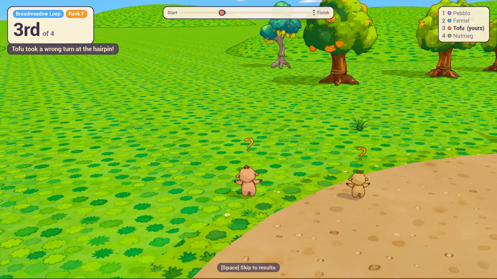
Mistakes you can see
The sim decides the race. You watch it play back: wrong turns at hairpins (a “?” and a trot back), a stumble at the log, stopping to look at butterflies, a wide corner.
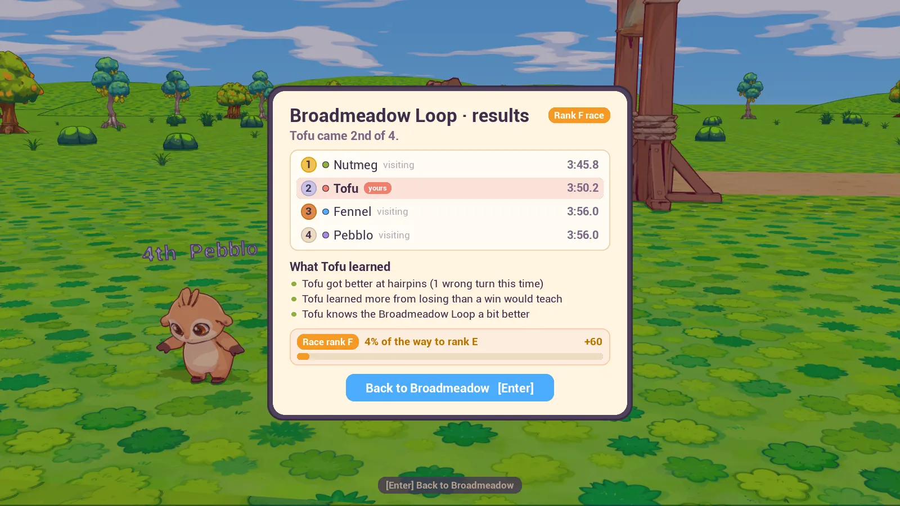
What your creature learned
Results list what it learned from its mistakes (cornering, pacing, obstacles, course memory) and its progress to the next rank. Visiting rivals race in the same deterministic sim.
Homes, jobs and the album
creatures choose; you can only offer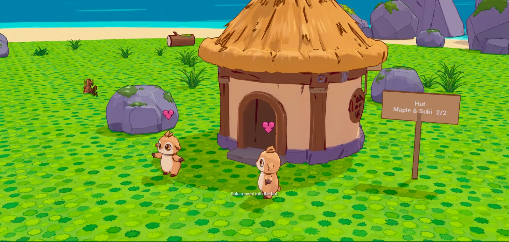
Shelters and homes
Build a nest, a hut or a communal house anywhere valid. Carry a creature to one to offer it a home: trust, personality and friends decide whether it moves in.
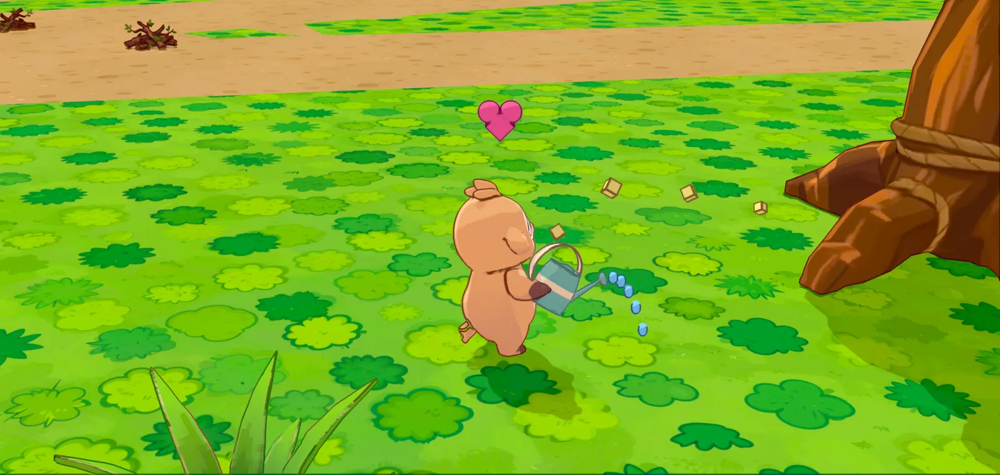
Jobs
On Broadmeadow, adolescents and older can be gatherers (branches to the stash box) or farmers (sweeter fruit that regrows faster). You suggest; they may say no.
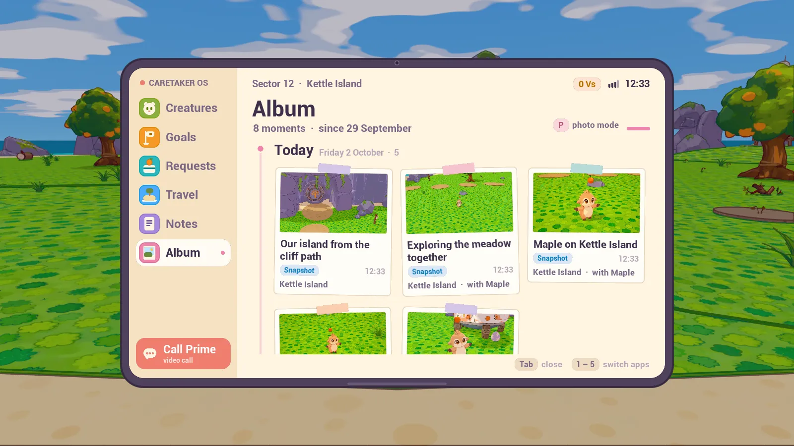
Album and photo mode
Big moments photograph themselves (a hatch, a first trip, a mended bridge). P opens photo mode with three filters and a caption.
Love and legacy
nothing is ever deleted: lives continue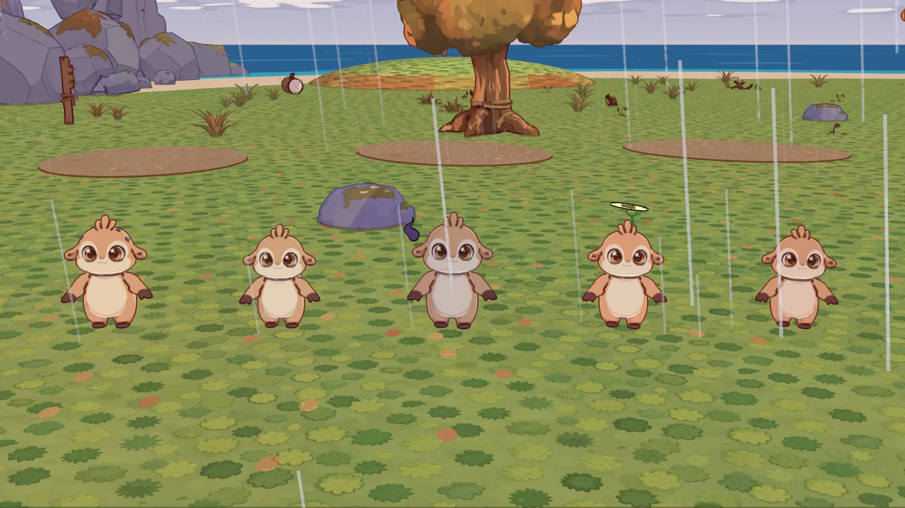
Hero and Dark looks
How you raise them shows: a soft gold halo and warmer colours, or a shadow wisp and cooler ones, plus archetype accents (leaf sprig, fin ridge, wing nubs, stone freckles).
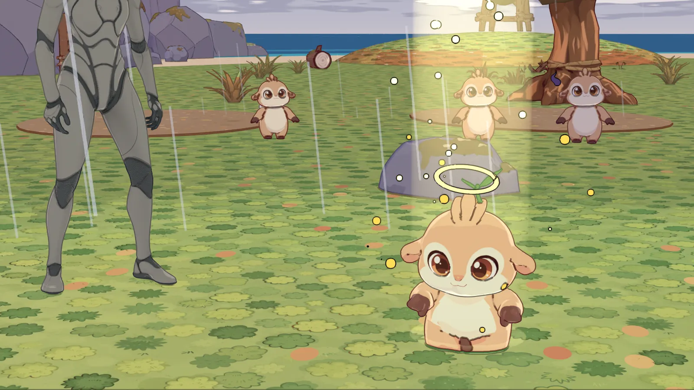
The elder ceremony
An elder in its final days glows warmer. If you choose to stay with it, it curls up in the light, becomes a glowing egg and hatches as Life II, keeping some of its memories.
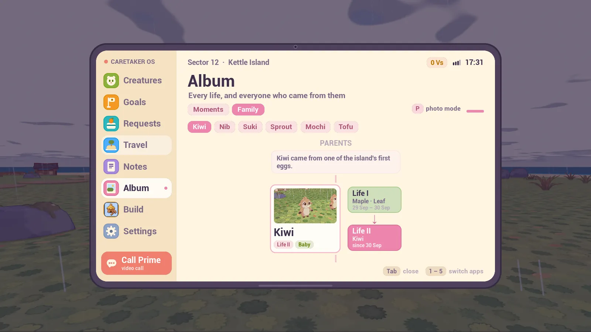
The family tree
Two adults who like each other start courting (hearts, walks side by side). Bless them and an egg appears at their home. The Album's Family tab shows parents, lives and children.
World and feel
display only: none of it changes the sim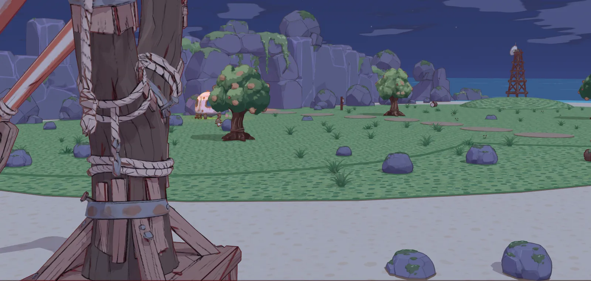
Day and night from your clock
The sun follows your local time and season. At night the light turns to moonlight with stars, and the incubators, nursery doors and shelters cast warm pools.
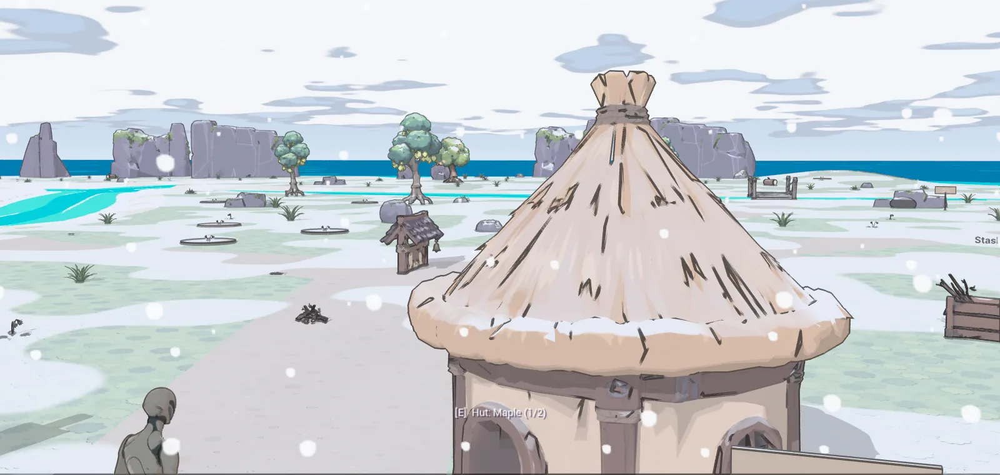
Seasons and weather
Spring blossom, autumn reds, winter frost and patchy cel snow, rain streaks. All from a second post-process pass, so the approved cel look underneath is untouched.
Worn paths
Where you and your creatures walk most, the grass wears to dirt, and it grows back over a few days. This is five simulated days of walking.
Music and ambience, all from fal
19 new audio files: eight music pieces (a day bed for each island, a night lullaby, the hub, the race and two stings, and the ceremony) from ElevenLabs Music and Google Lyria, four ambience loops (shore by day and night, meadow, hub hum) from Mirelo SFX, and seven sound effects. An audio director crossfades the beds at dusk, lowers the music during mentor calls and brings the shore up as you walk to the sea. The loops were cut and crossfaded by script and checked with measurements. Nobody has listened to them yet.
Also new: naming your islands on first arrival, vacation mode and volume controls in the phone's Settings.
New fal art
all pending Kenneth's reviewThe MVP kit
pending review16 props (restoration, notes, keypad, slingshot, bridges, hub doors, request board, trees), a hub floor texture and 14 UI icons. Concept on the left, Meshy 7.1 mesh on the right. Three weak meshes were redone.
Homes and jobs kit
pending reviewNest, hut, communal house, stash box and watering can, plus job icons. The race kit (gate, flag posts, entry board, podium) was made the same way.
Prime Rafi candidates
Kenneth to pickThree looks for the mentor, each with a desert variant. Goggles is in the game for now.
Still placeholder or unfinished
- The caretaker is the grey template mannequin, including in the ceremony.
- Love & legacy and world & feel were verified on an integration branch (62 of 62 Unreal tests, a 72-hour soak with no failures) and merged into main this evening; that is the build Kenneth is playing now.
- Known issues in the build: a creature can run away while you carry it, taking a creature off Broadmeadow clears its job, the landing camera is a bit far, trees keep their painted fruit after harvest.
- An open question for Kenneth: creatures left alone on the other island get neglect warnings, and one ran away within 7 in-game days in the soak. Is that the right pace?
Day two: in the engine
2026-09-28 · Unreal Engine 5.8 · greybox, not final art
Playable starter island
playableWalk the island, pick fruit, hand-feed and pet the baby. The baby's behaviour comes from the simulation: it reads the sim's intent (wander, seek food, sleep, approach you) and acts it out on the navmesh, with a small emotion symbol overhead. The caretaker is still the template mannequin.

The greybox island
About 80 by 60 m: grass, sand, a dirt path, the cave cliff (still cubes), the incubator, three fruit trees and a broken pier.
The sim runs inside Unreal
- Loads the save (with a backup), then catches up on the time you were away.
- Keeps a “While you were away” recap of what mattered.
- Steps every 60 real seconds, from the wall clock, not the frame rate.
- Autosaves every 5 minutes and on quit.
- 11 of 11 Unreal automation tests (5 sim-in-engine, 6 gameplay), plus the 17 sim tests.
What the game is
design direction, not a feature listYou are the newly appointed Caretaker Prime of a neglected island sector. The previous caretaker is gone, the facilities are failing and the islands are overgrown. A caretaker from another sector helps over a patchy video link, but doesn't know your islands. A storm hit the sector some time ago, and you piece the rest together as you go.
You raise a small number of creatures, around 15 at most on the first real island. Genes, food, care, friendships, rivalries and how you treat them shape who each one becomes. The world runs on the real clock, including while the game is closed, and there is no game over from neglect. The goal is one companion with a personal history, not a collection.
Oddly alive
Creatures approach, choose, remember, teach, misbehave and make up, within rules you can read.
Agency with consequences
Praise, scold, feed, relocate. Context, trust, memory and who was watching change the outcome.
Time and continuity
Real clock and seasons, elderhood, reincarnation, descendants and a family album spanning years.
Restoration as play
Clear grass and rocks, find notes, repair hardware, plant trees, bring abandoned islands back.
A clean world view
Little HUD. Faces, behaviour and small emotion symbols carry the state; a phone holds the detail.
Systems first
The simulation is deterministic and saveable. AI helps make assets; it never decides what a creature does.
The return loop
The first milestone we test against: after about a week of real time, do two creatures from staggered eggs feel different and produce stories you remember?
Art direction
cozy anime cel-shading, from an 8-page style guideRules every render is checked against
- Coloured contours. Lines are a darker shade of the fill they surround, never pure black.
- Flat fills, hard shadows. A base colour plus two or three hard-edged shadow steps. No gradients inside fills.
- Sunny light. Coastal sun from the upper left, a faint warm rim light, faces always lit.
- Hue-shifted shadows. Shadows go cooler and violet, not just darker grey.
- Chunky shapes. Rounded, readable silhouettes at gameplay distance. No spindly parts on babies.
- No texture noise. No fur strands, grain or bump noise. Fur is implied by silhouette tufts.
- One body plan. Every creature shares a biped rig: head, torso, two arms with usable hands, two legs.
Palette
Sampled from the style guide. These are the game's colours; this page stays monochrome so the art carries them.
Style anchors
test renders that prove the look reproduces before any real asset is made
Nursery cave
Cave, locked vault door and incubator in one frame.

Prop sheet
Rope, timber, faceted stone and rusty-cute company hardware.

Ground tile
Seam error at the wrap edges came out close to the interior baseline, so it tiles.
The look in Unreal
one post-process material for the whole gameHow the cel-shading works
- Three tone bands. The light each pixel receives is split into lit, mid and dark, then multiplied back onto the flat base colour. Shadows lean violet.
- Coloured outlines. Drawn from depth, normal and stencil edges, on the nearer surface only, and coloured from the local fill instead of black.
- Warm rim light on characters. Characters are marked in the stencil buffer, which also keeps their faces out of the darkest band.
- Painted sky. An azure gradient with two-tone blob clouds.
- Off: Lumen, bloom, ambient occlusion, auto exposure. Fixed exposure keeps the bands predictable.
“like the cell shading”

Look-dev scene
Imported props, the baby and palette swatches, re-shot after every change to the look.

The baby under the look
In engine, with the character rim light and coloured outlines. Faces are kept out of the darkest band.
How we build it
one person, one orchestrator, many agentsKenneth
Direction, taste, and every approval gate
Orchestrator · Claude Opus 5.5
Plans, dispatches, then re-runs every acceptance check itself
Planning & art direction
- Plan and architecture
- Art bible and prompt blocks
- Concepts, picks with written reasons
Engine code
- C++20 simulation core
- Save schema and migrations
- CMake + ctest loop
3D pipeline
- fal generation scripts
- Headless Blender checks and fixes
- FBX export for Unreal
Mechanical work
- Repo bootstrap, git LFS
- Commits and pushes
- Engine install checks
Systems first, AI for assets only
Creature behaviour, needs, time and saves are ordinary deterministic C++ with tests. No model call decides game state, and the game never needs a network call to run. fal generates the art, meshes, textures and sounds during development; those become normal files in the project.
Humans at the gates
Agents propose and check; Kenneth decides. The creature design was a hard stop: nothing went to 3D until he picked one. Every generated asset carries a manifest with the endpoint, prompt, references, file hashes, and an flag that only flips on his explicit decision, stored with his words.
The fal asset pipeline
every endpoint checked live before useCreatures
Caretaker and grown-up creatures
Props
Textures and sound
Ground textures, tiled 2x2
5 of 5 doneTiling a texture 2x2 makes seams obvious. Ideogram tiling kept stalling, so all five came from z-image turbo tiling, with patina normal maps.


Starter sound set
Footsteps on grass, grass pull, pickup whoosh, fruit crunch, egg crack, hatch chime, happy chirp, hungry whine, phone ping, and a looping island ambience: 15 files, since some sounds have variants. All are imported into Unreal; pickup, crunch, chirp and whine already play in the greybox.
Models we've used
every generation model so far (all run on fal), plus the agentsEvery generated asset keeps a manifest with the exact endpoint, prompt and references, so this list comes straight from those files. Some models won a bake-off and became the default; others were tried and dropped, and they're listed too.
The creature
one neutral baby that every lineage grows fromThe first baby has to be archetype-neutral: tan and cream, no leaves, fins, feathers or crystals. What it grows into comes from genes and care. The art agent drew four candidates, each with a hero render and a turnaround for 3D. Then the build paused for a human pick.
“for creatures let go with C”


Dumpling turnaround
The four A-pose views fed to Meshy's multi-image-to-3D. Consistency across views matters more than any single drawing.

3D v1: Meshy 7.1, 24-bone rig, 12 clips
rejectedConcept on the left, the rigged mesh and walk-cycle frames on the right. The shape came through well. The colour reads browner and greyer than the concept because Meshy bakes shading into the texture.
An honest note on v1, and what v2 fixed
The v1 skin weights from the auto-rig deformed badly, and Kenneth rejected it: the head deformed as it turned and the arms warped the body. Measuring it confirmed him. Head and neck influence was spread across the face, arm bones pulled on the belly, and several joints sat outside the mesh; one knee was above the hip.
v2 re-placed the joints inside the body and re-skinned the mesh by region: a rigid head, with narrow blend bands at the neck, armpits and hips. Bone orientations are unchanged, so the same 12 clips still apply. Measured head distortion went from up to 270 mm to 0, and belly leak on the wave clip from 33 mm to 0. The texture was colour-matched to the concept.
One more bug surfaced in Unreal: with any animation applied, the baby rendered about 1 cm tall. The animation files carried their metre-to-centimetre scale differently from the mesh. Importing the animations at x100 on the root bone fixed it. Still to do: the generic clips don't suit a round body (the wave is hidden, the belly creases, the feet dip), so custom clips are next.

Weights: v1 (left) vs v2 (right)
v2 doneSame skeleton, same clips. Watch the head and belly in the wave frames. Full sheet with all four clips.


Texture: concept, v1, v2
v2 donev2 pulls the tan and cream back toward the concept and flattens the baked shading, so the toon shader can do the shading.
Prop kit
concept vs Meshy 3D render, 13 propsSimulation core
CaretakerSim · C++20 · no engine headersDeterministic
All state is integers: needs and stats in fixed-point hundredths, times in Unix seconds. No floating-point values are saved. Randomness is a hash of world seed, subsystem, entity, tick and draw number, so one creature's luck can't shift another's, and a replay with the same seed gives the same bytes.
Offline catch-up
The world ticks every 60 seconds. When you come back, the first 24 hours away are replayed minute by minute; after that it steps hourly, with harm damped the longer you were gone. Catch-up is capped at 60 days. Moving the clock backwards changes nothing. Vacation mode slows ageing and holds needs above a floor.
| Test | What it proves |
|---|
First playtest
what Kenneth flagged, 2026-09-28| Flag | What we're doing | Status |
|---|
Engine setup lessons
UE 5.8 on a Mac, things that cost us time1 · The Epic launcher's App Translocation loop
macOS runs quarantined apps from a randomized, read-only location (App Translocation). The launcher tried to update itself there, couldn't, and restarted into the same update. Clearing the quarantine attribute let it run from and finish updating.
xattr -dr com.apple.quarantine "/Applications/Epic Games Launcher.app"
2 · Xcode 26+ ships without the Metal compiler
Since Xcode 26 the Metal toolchain is a separate download. Without it, shader compiles fail with . One-time fix per machine:
xcodebuild -downloadComponent MetalToolchain xcrun metal --version
3 · UE 5.8 has an MCP plugin
Unreal 5.8 includes Epic's experimental plugin, which lets agents talk to the editor. It's enabled in the project (editor only), next to the Python scripting plugin, and we verified it answers (HTTP on port 8000 by default). Most editor automation still runs as headless Python. This UE version's SDK config also accepts Xcode 27, so C++ builds work on a current toolchain.
4 · Renaming the template project
UE 5.8 ignored when we renamed the ThirdPerson template's packages and classes. entries worked. Copying also misses the shared template packs (Characters, Input, LevelPrototyping), so the mannequin and input assets had to be added by hand.
5 · Headless test runs that silently skip the tests
quits before the tests run. Use so the editor exits when the test queue is done, and check the test count in the log.
6 · A game window that never appears
Launching through the binary plays sound but shows no window on macOS. The launcher now starts the game through .
7 · Network outages mid-generation
Two DNS outages killed running agents. Because every fal job is logged with its , the finished results were fetched afterwards rather than regenerated.